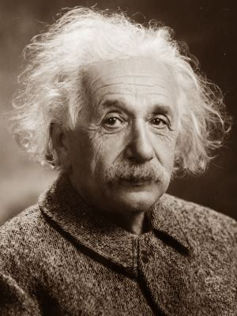

Isaac Newton

Présentation
Isaac Newton (1643–1727) est un physicien et mathématicien anglais. Il a formulé la loi de la gravitation universelle et les trois lois du mouvement qui fondent la mécanique classique.
Fiche d’identité
| Nom | Newton |
| Prénom | Isaac |
| Naissance | 25 décembre 1642 |
| Décès | 20 mars 1727 |
| Nationalité | Anglaise |
| Domaine | Physique, Mathématiques |
| Travaux | Gravitation universelle, lois du mouvement |
Contributions majeures
- Loi de la gravitation universelle
- Lois du mouvement (mécanique classique)
- Travaux sur l’optique et le calcul infinitésimal
Albert Einstein
Présentation
Albert Einstein (1879–1955) est un physicien théoricien allemand. Il est célèbre pour sa théorie de la relativité restreinte et générale, qui a révolutionné la physique moderne.
Fiche d’identité
| Nom | Einstein |
| Prénom | Albert |
| Naissance | 14 mars 1879 |
| Décès | 18 avril 1955 |
| Nationalité | Allemande |
| Domaine | Physique théorique |
| Travaux | Relativité restreinte et générale |
Contributions majeures
- Théorie de la relativité restreinte et générale
- Équivalence masse-énergie (E=mc²)
- Travaux sur la mécanique quantique et la physique statistique